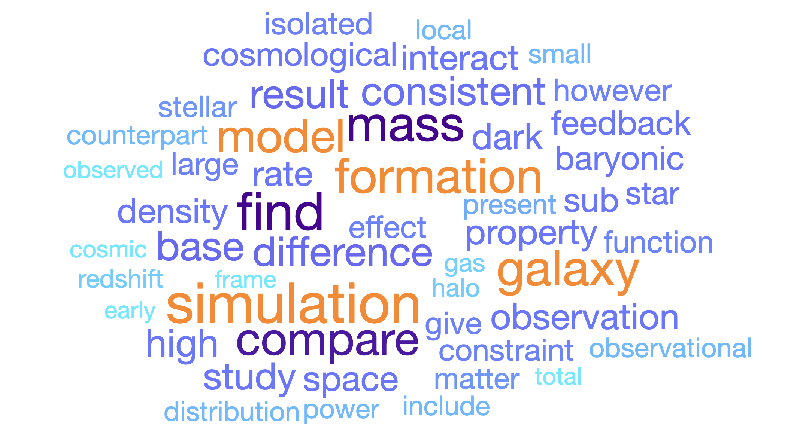

For the full publication list, please check my ADS bibliography link.
Selected Publications
- The bolometric quasar luminosity function at z = 0-7 (2020) ; Shen, Xuejian; Hopkins, Philip F.; Faucher-Giguère, Claude-André; Alexander, D. M.; Richards, Gordon T.; Ross, Nicholas P.; Hickox, R. C., Monthly Notices of the Royal Astronomical Society, Volume 495, Issue 3, pp.3252-3275
- Dissipative dark matter on FIRE - I. Structural and kinematic properties of dwarf galaxies (2021) ; Shen, Xuejian; Hopkins, Philip F.; Necib, Lina; Jiang, Fangzhou; Boylan-Kolchin, Michael; Wetzel, Andrew, Monthly Notices of the Royal Astronomical Society, Volume 506, Issue 3, pp.4421-4445
- Dissipative Dark Matter on FIRE - II. Observational signatures and constraints from local dwarf galaxies (2022) ; Shen, Xuejian; Hopkins, Philip F.; Necib, Lina; Jiang, Fangzhou; Boylan-Kolchin, Michael; Wetzel, Andrew, eprint arXiv:2206.05327
- SMBH seeds from dissipative dark matter (2021) ; Xiao, Huangyu; Shen, Xuejian; Hopkins, Philip F.; Zurek, Kathryn M., Journal of Cosmology and Astroparticle Physics, Volume 2021, Issue 07, id.039, 43 pp.
- High-redshift JWST predictions from IllustrisTNG: dust modelling and galaxy luminosity functions (2020) ; Vogelsberger, Mark; Nelson, Dylan; Pillepich, Annalisa; Shen, Xuejian; Marinacci, Federico; Springel, Volker; Pakmor, Rüdiger; Tacchella, Sandro; Weinberger, Rainer; Torrey, Paul; Hernquist, Lars, Monthly Notices of the Royal Astronomical Society, Volume 492, Issue 4, p.5167-5201
- High-redshift JWST predictions from IllustrisTNG: II. Galaxy line and continuum spectral indices and dust attenuation curves (2020) ; Shen, Xuejian; Vogelsberger, Mark; Nelson, Dylan; Pillepich, Annalisa; Tacchella, Sandro; Marinacci, Federico; Torrey, Paul; Hernquist, Lars; Springel, Volker, Monthly Notices of the Royal Astronomical Society, Volume 495, Issue 4, pp.4747-4768
- High-redshift predictions from IllustrisTNG - III. Infrared luminosity functions, obscured star formation, and dust temperature of high-redshift galaxies (2022) ; Shen, Xuejian; Vogelsberger, Mark; Nelson, Dylan; Tacchella, Sandro; Hernquist, Lars; Springel, Volker; Marinacci, Federico; Torrey, Paul, Monthly Notices of the Royal Astronomical Society, Volume 510, Issue 4, pp.5560-5578
- X-ray morphology of cluster-mass haloes in self-interacting dark matter (2022) ; Shen, Xuejian; Brinckmann, Thejs; Rapetti, David; Vogelsberger, Mark; Mantz, Adam; Zavala, Jesús ; Allen, Steven W., Monthly Notices of the Royal Astronomical Society, Volume 516, Issue 1, pp.1302-1319
- Disruption of Dark Matter Minihaloes in the Milky Way environment: Implications for Axion Miniclusters and Early Matter Domination (2022) ; Shen, Xuejian; Xiao, Huangyu; Hopkins, Philip F.; Zurek, Kathryn M., eprint arXiv:2207.11276
- THESAN-HR: Galaxies in the Epoch of Reionization in warm dark matter, fuzzy dark matter and interacting dark matter (2023) ; Shen, Xuejian ; Borrow, Josh ; Vogelsberger, Mark ; Garaldi, Enrico ; Smith, Aaron ; Kannan, Rahul ; Tacchella, Sandro ; Zavala, Jesús ; Hernquist, Lars ; Yeh, Jessica Y. -C. ; Zheng, Chunyuan, eprint arXiv:2304.06742